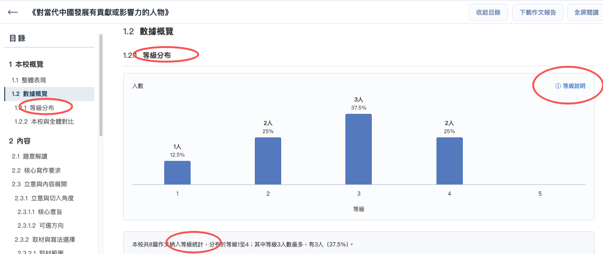
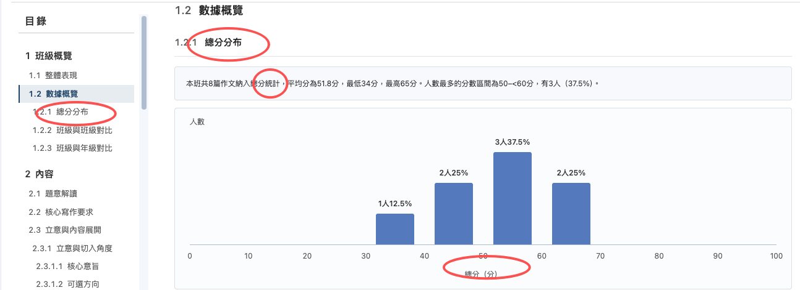
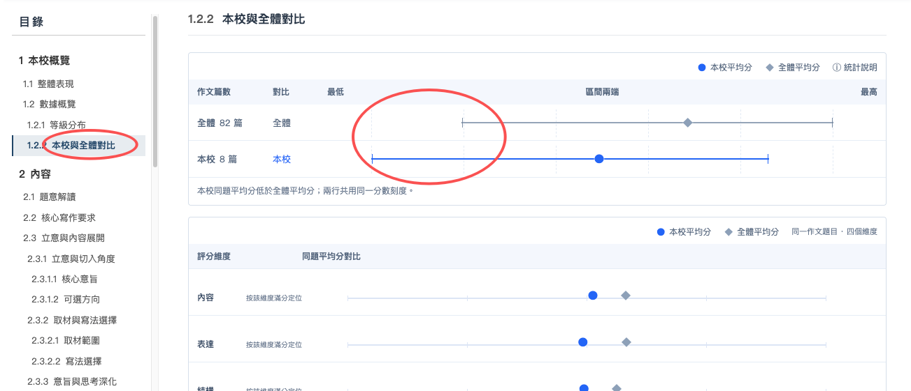
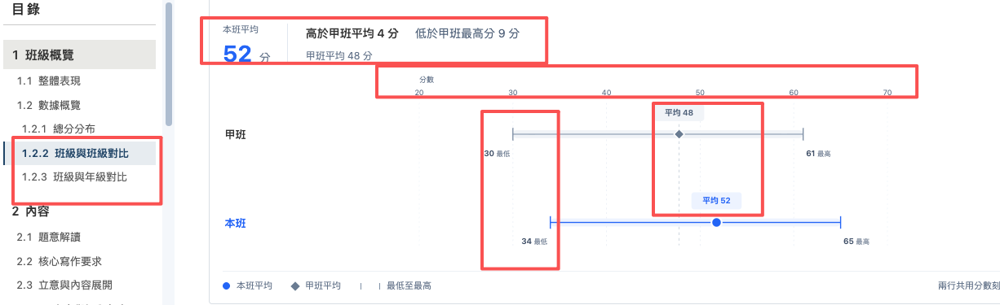
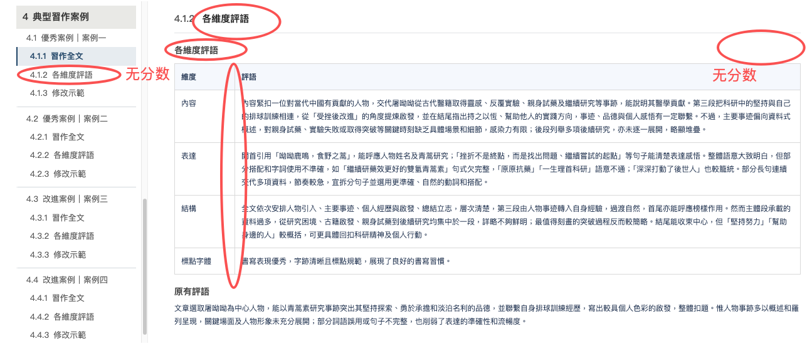
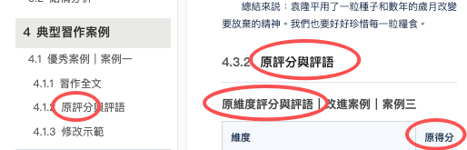

作文比賽與班級報告：詳情區別與對應關係 （提示词，已区分开要求）
按提供的對照文檔原文展示；下方階段頁面仍以各自現行規則為準。點擊圖片可查看原圖。
| 章節 | 詳細章節 | 作文比賽 | 班級報告 |
|---|---|---|---|
| 第一章 | 1.2 數據概覽 分数/等级 | 等级分布  | 总分分布  |
| 第一章 | 1.2 數據概覽 | 1.2.2 本校與全體對比 使用区间與四維度展示，不展示具体分数。  | 1.2.2 班級與班級對比 本校與全体對比展示總分與四維度各自的納入篇數、平均分、最低分、最高分。  |
| 第二章 | 不变 | 不变 | |
| 第三章 | 不变 | 不变 | |
| 第四章 | 4 學生作品示例 | 文案叫：各维度评语 總分：59／100，隐藏文案内容  | 文案叫：原評分與評語 原總分、原總評、四維度原分及原評語。  |